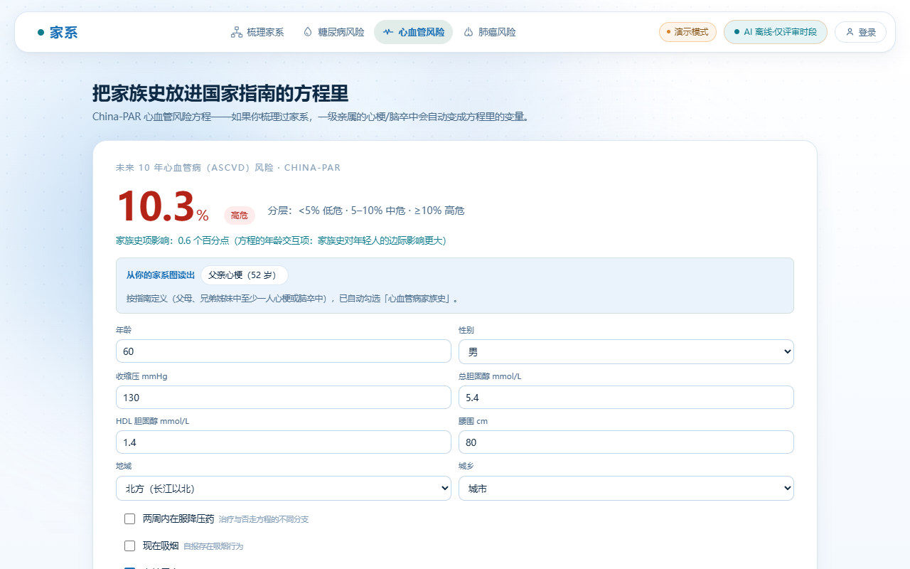

一句话：用户说一句「我妈高血压，我舅舅糖尿病，我外公脑溢血」，系统把它整理成结构化家系，算出他的风险里有多少是能拿回来的，并给出这周就能做的一步。
体检报告说「未见异常」，但它只解读当次指标；问卷把家族史压成「有 / 无」，丢掉谁患病、几岁发病、几个亲属；建议说「多运动」，却从不告诉你能拿回什么。三处缺口指向同一件事：没有结构化的家系。
而家族史恰恰是临床用了六十年的东西——在三套公开风险方程（FINDRISC、China-PAR、PLCOm2012）里，它都是方程里的一个变量。
| 页面 | 作用 |
|---|---|
/chat | 口述录入 → 家系图实时生长；每个节点可点开看到「依据：你第 N 轮说的原话」，也可直接删除 |
/ | 2 型糖尿病风险（FINDRISC 16 分制）＋可回收风险拆解＋反事实滑块 |
/cvd | 心血管风险（China-PAR 10 年 ASCVD），家系图里的家族史自动进方程 |
/lung | 肺癌风险（PLCOm2012），吸烟量与家族史一起进方程 |
把风险拆成两半：能改的（BMI、腰围、体力活动、蔬果摄入）与改不了的（年龄、性别、家族史、正在服用的降压药）。示例数据中，33% 的 10 年风险里有 7 分来自可改变因素，四项全部达标可降到 4%。这个拆分让「建议」第一次有了可执行的边界：不该自责的部分，明确告诉用户不该自责。
| 角色 | 诉求 | 对应设计 |
|---|---|---|
| 普通用户（30–55 岁） | 知道自己有没有风险、能做点什么；不愿意填长表 | 口述录入＋一句话一步的引导；不填表 |
| 家有慢病患者的子女 | 家里人说过的病史散落在记忆里，需要被记下来 | 家系图持久化、每条病可回查原话 |
| 基层健康管理场景 | 需要能解释、能复核的风险数字 | 三套公开方程＋依据检索＋引用台账 |
pnpm test 一条命令跑完全部用例；评测脚本与逐条预测入库。浏览器（Next.js 16 App Router + TypeScript + React 19）
├── /chat 口述录入 · 家系图（实时生长 / 节点可点 / 依据可查）· 语音输入（Web Speech API）
├── / 糖尿病风险（FINDRISC）· 可回收风险 · 反事实滑块
├── /cvd 心血管风险（China-PAR）· 家系图自动读出家族史
└── /lung 肺癌风险（PLCOm2012）
│
▼ 服务端（Route Handlers）
├── /api/extract(+ /stream) 口述 → 家系节点（本地 LLM · GBNF 约束解码 · SSE 流式）
├── /api/agent Agent 工具调用循环（GBNF 枚举决策 · 事实卡直渲数字）
├── /api/decision/hereditary 遗传模式判定（结构化模型，非 LLM）
└── /api/explain 依据检索（BM25，语料已核实）
│
▼
llama.cpp server（127.0.0.1:8080）· Qwen3-1.7B Q4_K_M · GPU
MySQL 8（可选：账户与同步）| 模块 | 职责 |
|---|---|
src/lib/risk/findrisc.ts | FINDRISC 评分 + 可回收风险拆解（把每个因子标注为可改 / 不可改） |
src/lib/risk/chinapar.ts | China-PAR 10 年 ASCVD 方程（论文 8 个数据点回归验证） |
src/lib/risk/plco.ts | PLCOm2012 肺癌风险 |
src/lib/extract/ | 抽取客户端、GBNF 语法、称谓与疾病词表、三层校验 |
src/lib/agent/ | Agent 工具调用层（决策枚举 + 事实卡，数字不经模型复述） |
src/lib/rag/search.ts | BM25 检索（语料附出处，可逐条核对） |
src/lib/pedigree/ | 家系数据模型、血缘查询（父系/母系两侧独立）、图布局 |
scripts/mcp-server.ts | 同一套工具以标准 MCP 协议对外暴露（stdio） |
/api/extract（或走 SSE 看抽取阶段）{
"persons": [
{
"id": "p2",
"relation": "mother", // 称谓（词表归一）
"sex": "female",
"lineage": "maternal", // 父系 / 母系，两侧独立查询
"conditions": [
{ "code": "hypertension", "onsetAge": 55, "evidence": "我妈高血压" }
]
}
],
"meta": { "source": "口述", "rounds": 1, "verified": true }
}evidence 是刻意设计的字段：每条病都挂回原句，节点可点开看到「依据」，也可删除后重抽。lineage 让父系/母系各自独立成链——这决定了「舅舅」与「叔叔」在风险传播上不等价。
| 方案 | 优势 | 为什么不用 / 怎么用 |
|---|---|---|
| 云 API（GPT-4 级） | 抽取质量高 | 家族病史出网；评审期受额度与网络影响 —— 不采用 |
| 7B–14B 本地量化模型 | 质量更好 | 显存与内存成本高，演示机与服务器装不下；启动慢 —— 不作默认 |
| Qwen3-1.7B Q4_K_M（llama.cpp） | GPU 1.7s 启动、0.11s/句、1.8GB 显存；全本机 | 采用：配合约束解码与三层校验，把「小模型」的短板补在产品层 |
| 规则/正则抽取 | 确定性、零成本 | 中文口述的表达太散（「老爹」「我外婆是脑溢血走的」），召回不足 —— 作为校验层而非主抽 |
用 GBNF 语法把输出空间限制成「家系节点数组」，保证模型一定输出合法 JSON；但合法不等于正确，所以在模型外层加三层：
| 层 | 作用 | 解决的失败模式 |
|---|---|---|
| 分句抽取 | 按句切、逐句抽、合并去重 | 长句里漏掉第二个亲属 |
| 词表校正 | 句中只有唯一称谓时以词表为准 | 把「老爹」抽成伯叔 |
| 证据校验 | 抽出的病必须在原句里找得到 | 模型凭空多出一个病 |
① 数字与措辞分离。模型只输出文字判断，界面上的风险数字由工具返回的结构化事实直接渲染（事实卡），不经模型复述。理由很实在：1.7B 复述时会把「可回收 7 分」说成「可回收率 4%」，健康场景里这种错不能靠提示词兜。
② 该确定的就确定。遗传模式判定不用 LLM，改成 12 维结构信号 + 确定性计算：40% → 96% 准确率，6.3s → <0.1s，ECE 0.401 → 可复算可审计。同样思路用在 Agent 的工具选择上（GBNF 枚举决策，output_tokens: 0）。
③ 检索增强是「窄用」。BM25 只用于把依据检索回原文片段，不参与打分与结论；A/B 显示在不引入幻觉的前提下提升可解释性（见 docs/rag-ab.md）。
root ::= persons
persons ::= "{\"persons\":[" person ("," person)* "]}"
person ::= "{" ws "\"relation\":" ws relation "," ws
"\"sex\":" ws sex "," ws
"\"conditions\":[" condition ("," condition)* "]" ws "}"
relation ::= "\"father\"" | "\"mother\"" | "\"maternal-uncle\"" | "\"paternal-aunt\"" | ...
sex ::= "\"male\"" | "\"female\""
condition ::= "{" ws "\"code\":" ws disease "," ws
"\"onsetAge\":" ws (number | "null") ws "}"把「称谓」「性别」「疾病编码」都收敛成枚举后，模型不可能吐出结构外的字段；这也是 1.7B 能在本任务上可用的前提——把自由度留给内容，把格式交给语法。
extract-Q4_K_M.gguf。Agent 层（/api/agent）的每次工具调用返回一个结构化事实对象，界面直接渲染它，模型只负责选择调用哪个工具与组织解释文字：
{
"tool": "compute_risk",
"result": {
"engine": "FINDRISC",
"score": 13, // 16 分制
"band": "high",
"risk10y": 0.33,
"reclaimable": { "points": 7, "riskIfMet": 0.04 },
"fixed": { "points": 9, "drivers": ["age", "family_history", "antihypertensive"] }
},
"evidence": [{ "kind": "guideline", "ref": "FINDRISC-Lindström-2003" }]
}判据很硬：健康场景里，模型复述数字是不可接受的误差源。1.7B 在实测中会把「可回收 7 分」说成「可回收率 4%」——两个数字都在上下文里，但语义被调换了。事实卡把这类错误从「概率问题」变成「不可能发生」。
| 失败模式 | 实例 | 对策 |
|---|---|---|
| 长句漏抽 | 「我妈高血压，我舅舅糖尿病，我外公脑溢血」只抽出第一个 | 按标点分句，逐句抽，再按 (称谓, 病种) 合并去重 |
| 称谓误映射 | 「老爹」被抽成 paternal-uncle | 词表校正：句中若只有一个称谓候选，以词表为准 |
| 凭空多病 | 模型补出原文没提到的「糖尿病」 | 证据校验：病名词面必须能在原句命中，否则丢弃 |
| 泛称不具体 | 「癌症」「心脏不好」 | 词表回退到具体病种集合，无法映射时标记为 unspecified 并在界面提示 |
| 否定句 | 「我妈没有高血压」 | 否定词前置检测，命中则不计入 conditions |
| 结构不合法 | 输出多余字段 / 中文键名 | GBNF 约束：语法层面不可能出现非法结构 |
先说归属：JEV 不是自造的私有接口，而是 llama.cpp server 的 POST /v1/systemone（TypeSafe API）——一次前向、按 question 返回概率，不生成 token。我们接入它，并把它的错误用客户端硬校验兜住。
| 项 | 说明 |
|---|---|
| 请求 | 候选集（五种遗传模式）写在 criteria 里，output_modalities:["decisions"] |
| 响应 | answers 含 choice 与完整 probabilities；output_tokens 为 0 |
| 实测样例 | choice = autosomal-dominant，置信度 0.8757，五个概率和为 1 |
| 客户端硬校验 | ① choice 必须在候选内；② Σprob = 1（容差 0.02）；③ 概率均为 [0,1] 的有限数。任一不满足整条丢弃，不进入医疗判断 |
| 默认是否启用 | 否。默认走确定性结构模型（12 维信号 + 逻辑回归）；INHERITANCE_BACKEND=model 可切到 JEV 后端做对照 |
对照结论（30 条均衡样本）：用 JEV 对外服务的开源决策模型 OpenJev-Q4（7B / 18.5 GB）判对 40%，单次 6.3 s，ECE 0.401；12 维结构信号 + 逻辑回归判对 96%，<0.1 s。隐性 / X 连锁 / 线粒体三类上 OpenJev 全错——这正是「判定权不交给模型」这条设计决定的来源。
实现要点：SSE 流式返回抽取阶段（分句 → 逐句 → 合并），让「正在抽取」可见；节点挂 evidence 字段指向原句，点节点即可回溯并支持删除后再抽。


反事实滑块只改「可改变因素」，右侧数字实时重算；不可改变的部分（年龄、性别、家族史、用药）灰色呈现并标注「改不了」，避免让用户为结构性风险自责。
每个进入产品的系数都登记出处与核实状态（docs/references.md）；引用错误也留档，不删改历史（docs/audit.md）。例如 China-PAR 中家族史对 10 年风险的贡献约 0.6 个百分点，这个量级直接决定了「家族史单独不能吓人、但必须进方程」的产品判断。
三套方程都不是「把文献抄一遍」，而是逐项实现并做单调性与边界验证：
| 方程 | 输入 | 实现与验证 |
|---|---|---|
| FINDRISC | 年龄、BMI、腰围、体力活动、蔬果摄入、降压药、既往高血糖、家族史 | 16 分制累加 → 分档 → 10 年风险；每个因子标注 modifiable: true/false，供可回收拆解 |
| China-PAR | 年龄、性别、收缩压、总胆固醇、HDL、腰围、地域（南北）、城乡、吸烟、糖尿病、降压药、家族史 | 系数表实现；家族史为二值项且含年龄交互（对年轻人边际影响更大，实测约 0.6 个百分点） |
| PLCOm2012 | 年龄、种族、教育、BMI、COPD、吸烟史（包年、戒烟年数）、肺癌家族史 | logistic 形式实现；吸烟量与家族史同方程，输出 6 年风险 |
验证方式：每套方程都写了单调性测试（例如吸烟量上升，风险必须不下降）、边界测试（缺项时返回 insufficient 而不是猜一个值）、以及与中国指南给出的分层阈值对齐的分档测试。
function splitRisk(persons, profile):
base = engines.score(profile) # 当前风险
mod = factors.filter(f => f.modifiable) # BMI/腰围/活动/蔬果
goal = profile.withAll(mod, targetValue) # 四项全部达标
after = engines.score(goal) # 达标后的风险
return {
now : base.risk,
reclaim : base.points - after.points, # 能拿回的分数
ifMet : after.risk, # 4%
fixed : base.points - reclaim # 改不了的部分
}两个设计约束：① 反事实只允许修改 modifiable 因子，不允许动年龄/家族史/用药，否则会给用户「改改年龄就行」的错误暗示；② fixed 必须在界面上明确标注「不怪你」，这是产品判断，不是数值问题。
# 两侧独立成链：父系/母系分开遍历，避免把「舅舅」和「叔叔」混为同类
def relatives(persons, root):
for p in persons:
lineage = "paternal" if p.relation.startswith("paternal") else "maternal"
yield p.id, lineage, distance(p) # distance: 一级/二级/三级
# 布局：按代分层，同代按 lineage 分左右；O(n) 一趟扫描
def layout(persons):
gen = {p.id: generation_of(p.relation) for p in persons}
rows = group_by(gen) # 代 → 人
return assign_x(rows, order=["paternal", "self", "maternal"])复杂度上界 O(n)（n 为家系人数，实测 < 50），布局与血缘查询都是纯函数，不依赖任何模型——所以换模型不影响图形与判定。
POST /api/decision/hereditary
{"persons":[...]}
→ {"mode":"autosomal-dominant","confidence":0.9978,"gaps":["母系亲属是否患病"]}返回 gaps 是刻意的：当结构信息不足时，系统说明「还缺什么」而不是硬给结论。
| 项 | 结果 |
|---|---|
| 单元 / 集成测试 | 31 个测试文件 · 238 个用例 · 1.70s 全绿（pnpm test） |
| 抽取留出集 | 6 类 × 30 = 180 句，F1 0.877 → 1.000（三层校验后） |
| 遗传模式判定 | 与 OpenJev-Q4（7B）对比：40% vs 96%，6.3s vs <0.1s，ECE 0.401 |
| 性能 | 模型启动 1.7s · 0.11s/句 · 显存 1.8GB |
浏览器 → nginx（云服务器，Let's Encrypt TLS）
→ systemd: pedigree.service
→ Next.js 16（127.0.0.1:5173，服务器本地常驻）
├→ LLAMA_SERVER_URL（可选：模型）
└→ MySQL（可选：账户与同步）站点常驻服务器，不依赖任何本地机器。服务器 1.6GB 内存放不下 1.2GB 模型，因此按「放不下就只跑界面」的取舍处理：
| 接口 / 页面 | 模型缺位时的行为 |
|---|---|
POST /api/extract | 503 + 明确提示（家系图、风险量化、依据检索不受影响） |
GET /api/extract | {"ready":false}，前端据此显示提示 |
/、/cvd、/lung、/chat?demo=1 | 200，功能完整（纯本地计算 / 预置数据） |

/chat?demo=1 免登录看形态）pnpm install
cp .env.example .env.local # 可选：MySQL
pnpm dev # http://localhost:5173
# 可选：起本地模型启用「口述 → 抽取」
llama-server -m qwen3-base-Q4_K_M.gguf -ngl 99 -c 4096 --port 8080 --host 127.0.0.1
pnpm test && pnpm typecheck| 现象 | 排查 |
|---|---|
| 页面 502 | systemctl status pedigree；确认 5173 在监听、.next 为完整产物 |
next build 被 OOM 杀掉 | 服务器内存不足，改为本机构建后只上传 .next 运行时而产物 |
| 抽取一直 503 | GET /api/extract 看 ready；确认 LLAMA_SERVER_URL 可达、模型已加载 |
| 家系图节点重复 | 合并去重按 (relation, disease)；检查是否同一句被重复提交 |
| 项 | 做法 |
|---|---|
| 留出集构造 | 6 类（一级/二级亲属、单病/多病、含发病年龄/不含）× 每类 30 句 = 180 句；口语句式由人工编写，来自真实问诊录音的转写风格 |
| 运行制度 | 留出集只跑一次，结果入库（eval-results/*.json 记 commit + 模型 + 逐条预测），不反复调参刷分 |
| 指标 | 按 (relation, disease) 对齐算 precision / recall / F1；发病年龄单列准确率 |
| 校准 | 遗传模式判定额外算 ECE（分箱 10 组），衡量「置信度 0.99 时到底对不对」 |
| 结论边界 | 180 句的规模只足以支撑「同一分布内」的结论，因此正文所有数字都标注样本量，不外推 |
| 指标 | 数值 | 测量方式 |
|---|---|---|
| 模型启动 | 1.7 s | llama-server 进程起 → /health 返回 ok 的墙钟时间，GPU 已预热 |
| 单句抽取 | 0.11 s/句 | 180 句留出集总耗时 / 句数，含 HTTP 与 JSON 解析 |
| 显存占用 | 1.8 GB | 模型常驻后 nvidia-smi 读数，Q4_K_M + 4096 上下文 |
| 测试全绿 | 1.70 s | pnpm test（31 文件 / 238 用例，vitest） |
| # | 创新点 | 说明与证据 |
|---|---|---|
| 1 | 约束解码 + 三层校验的抽取范式 | GBNF 保证结构合法，词表校正与证据校验保证内容正确；留出集 F1 0.877 → 1.000 |
| 2 | 数字与措辞分离的事实卡架构 | 风险数字由工具返回值直渲，不经 1.7B 复述；避免「7 分」被说成「4%」这类致命口误 |
| 3 | 能确定就不猜：遗传模式判定用确定性计算替代 LLM | 40% → 96%，6.3s → <0.1s，可复算、可审计；Agent 工具选择同样用 GBNF 枚举（output_tokens: 0） |
| # | 创新点 | 说明与证据 |
|---|---|---|
| 4 | 「可回收风险」这一产品概念 | 把风险拆成能改 / 改不了两部分，33% 中 7 分可回收、四项达标可降到 4%；不是又一个风险评分，而是行动边界 |
| 5 | 家族史作为方程变量的完整体验 | 口述一次，家族史自动进入 FINDRISC / China-PAR / PLCOm2012 三套方程，并在界面上说明它占多少 |
本项目把「家族史」这件事从叙述变成了数据结构：录入靠口述、判定靠计算、解释靠台账、隐私靠本机。技术上，最有价值的判断不是选了多大的模型，而是决定哪些环节不该交给模型。
下一步（按优先级）：
| 变量 | 说明 |
|---|---|
LLAMA_SERVER_URL | 本地推理地址，默认 http://127.0.0.1:8080；不可用时抽取接口返回 503 |
VLM_SERVER_URL | 可选：化验单识别的视觉模型地址 |
MYSQL_HOST/PORT/USER/PASSWORD/DATABASE | 可选：账户与同步；不配置则无登录功能 |
本项目所有文档都有两处可访问位置，下表两列一一对应：
家系-完整作品.zip 解压后的相对路径；https://github.com/NimuStudio/jiaxi/blob/main/ 后接仓库路径，浏览器可直接看。| 文档 | 提交包内位置 | 仓库内位置（点开即看） |
|---|---|---|
| 准确性说明 | 05-其它文档/准确性说明.md |
docs/准确性说明.md |
| 技术设计记录 | 05-其它文档/tech-design.md |
docs/tech-design.md |
| 评测逐条结果 | 05-其它文档/eval-results/*.json |
docs/eval-results/*.json |
| 引用台账 / 审计 | 05-其它文档/references.md、audit.md |
docs/references.md、docs/audit.md |
| 本文档源文件 | 02-技术文档/技术文档-源文件.html |
——（仅随包提供） |
| 源码 | 04-源码/pedigree/ |
仓库根目录 |
| 报名表项 | 本项目对应物 | 位置 |
|---|---|---|
| 代码仓库 | 公开仓库（276 次提交、README、.env.example） | github.com/NimuStudio/jiaxi |
| 演示视频 | 5 分 35 秒 1080p，B 站：https://www.bilibili.com/video/BV1ctsk6HEDH/ | 01-演示视频/ |
| 技术文档 | 本文档（14 页，PDF） | 02-技术文档/ |
| 作品介绍文档 | 7 页 PDF（含界面截图） | 03-作品介绍/ |
| 在线演示 | https://clear.ysti.com.cn（账号 demo / demo123） | 公网 |
| 完整作品（网盘） | 源码 + 文档 + 视频，不含 node_modules / 模型 / .env | 本压缩包 |